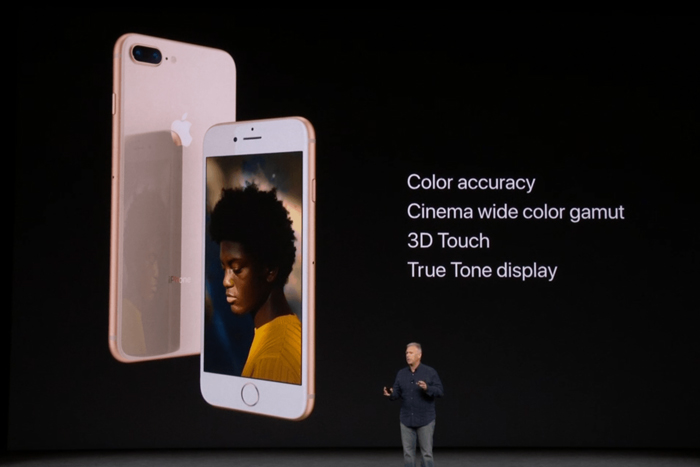

Timeline
The Beginning
Race to Success
Media
Photos
Videos
Experience
References
About
A Decade of iPhone
Timeline - Race to Success
The iPhone 6 & 6 Plus
September 25, 2014
iPhone 6S & 6S Plus
September 25, 2015
iPhone 7 & 7 Plus
September 16, 2016
10 Years of iPhone
September 22, 2017

The iPhone XS to Success
September 21, 2018
The iPhone 11 Pro
September 20, 2019
Prev Page
Next Page